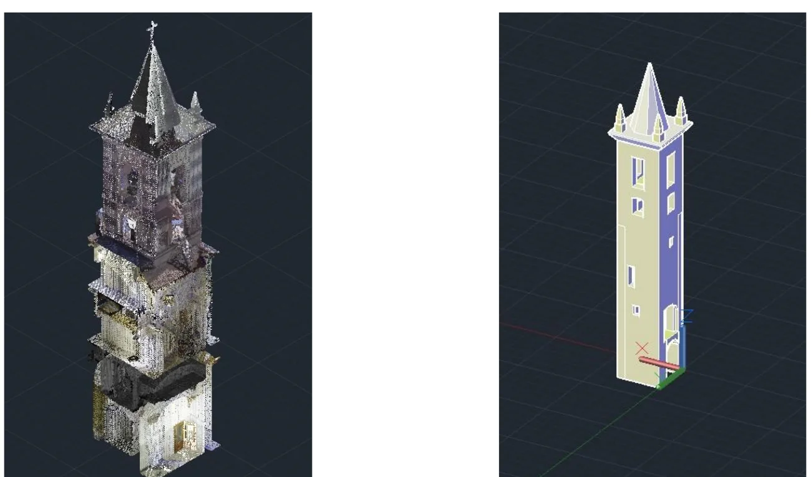

بنا
کلیسای سن جولیانو در ساحل لیگوریا، دستکم از قرن سیزدهم میلادی سابقه دارد. برج ناقوس آن با سنگ سنتی لیگوریایی ساخته شده و بعدها با آجر و اندود ترمیم شده است: پلان مربع، بازشوهای قوسی، طاقهای متقاطع در طبقات و بامی هشتضلعی با چهار منارهی کوچک در گوشهها.
۱. ابر نقاط
کار با ابر نقاط کل مجموعهی کلیسا شروع شد. برج ناقوس از آن جدا شد تا هندسهی واقعیاش، با همهی ناهمواریهای یک بنای چندصدساله، مبنای مدل باشد.

۲. مدل سهبعدی
از روی ابر نقاط، مدل سهبعدی برج در اتوکد ساخته شد: پلان طبقات، طاقهای متقاطع (از تقاطع دو طاق آهنگ)، میانپرهای طاقها و بام هشتضلعی. جزئیات با سادهسازیهای کنترلشده حذف شدند تا مشبندی در نرمافزار تحلیل دچار خطا نشود.

۳. تحلیل غیرخطی در ANSYS
برای دیوارها، میانپرها و طاقها مشخصات جداگانه تعریف شد و رفتار غیرخطی مصالح بنایی با مدل دراکر-پراگر شبیهسازی شد. چون اطلاعات مصالح محدود بود، مقاومتها با ضریب اطمینان کاهش یافتند. مشبندی در طاقها ریزتر (۴ سانتیمتر) و در بدنه درشتتر (۲۰ سانتیمتر) انتخاب شد.
- زیر وزن خود، بیشترین تغییر شکل حدود ۷ میلیمتر بود و تمرکز تنش در محل اتصال میانپر به دیوار و طاق دیده شد.
- در تحلیل لرزهای، شتاب افقی بهتدریج افزایش یافت. برج تا حدود ۳٫۵ متر بر مجذور ثانیه در جهت X و ۳٫۳ در جهت Y پایدار ماند.


۴. پیشنهاد مداخله
هدف، تقویت برج بدون از بین بردن رفتار و هویت بنای سنگی بود:
- میلمهار یا کابل فولادی: محصورشدگی بیشتر بدون دست بردن در مصالح اصلی.
- کلافهای حلقوی با مصالح برگشتپذیر مثل چوب، فولاد ضدزنگ یا FRP، در چند تراز برج.
- پرهیز از سختکردن بیش از حد و افزودن بتن مسلح، و استفاده از ملات آهکی بهجای سیمان.
این تجربه برای ساختمانهای ارومیه
همین روش، یعنی برداشت دقیق، مدل واقعی، تحلیل و کمترین مداخلهی لازم، برای بناهای آجری و خشتی ارومیه هم کار میکند. هر بنای قدیمی اول باید شناخته شود، بعد تقویت.